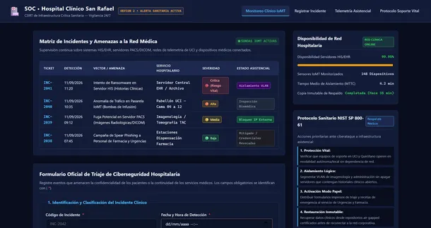

Autenticación de Operador
Acceso al sistema
- Las credenciales iniciales se aprovisionan desde variables de entorno seguras del servidor.
Monitoreo Perimetral y Topología de Red

Bandeja de Incidentes Registrados
| ID | Título | Descripción y Resolución | Prioridad | Estado | Acciones |
|---|
No hay incidentes que coincidan con los criterios seleccionados.